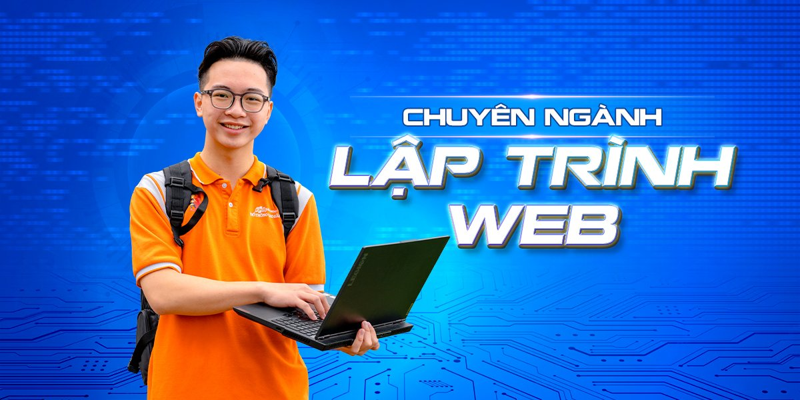

Tổng quan
Với cuộc cách mạng 4.0, ngành công nghệ thông tin đang ‘bùng nổ’ như vũ bão và chuyên ngành Ứng dụng
phần mềm là một trong số đó. Khác với phát triển phần mềm, nhân sự về ứng dụng phần mềm sẽ tập trung
vào các công việc thử nghiệm, ứng dụng phần mềm vào hệ thống hạ tầng của doanh nghiệp. Qua đó, giúp
doanh nghiệp tìm kiếm được những giải pháp CNTT tối ưu, cải thiện chất lượng hoạt động, quy trình
làm việc…
Nội dung đào tạo
Kiến thức cơ bản về Công nghệ thông tin, mạng máy tính
Quản trị, vận hành hệ quản trị cơ sở dữ liệu
Thiết kế các ấn phẩm số với Photoshop và Illustrator
Cài đặt và bảo trì phần cứng, phần mềm
Thiết kế, xây dựng và quản trị website dựa trên CMS
Kiểm thử cơ bản
Ứng dụng phần mềm miễn phí, triển khai các phần mềm mã nguồn mở
Thiết lập và quản trị mạng máy tính, quản trị máy chủ ảo
Thiết lập và ứng dụng công nghệ điện toán đám mây
An toàn và bảo mật thông tin
Kỹ năng phần mềm & tiếng Anh: kỹ năng giao tiếp, thuyết trình, kỹ năng làm việc nhóm, kỹ năng xử lý
tình huống phát sinh trong quá trình thực hiện công việc, tiếng Anh giao tiếp
